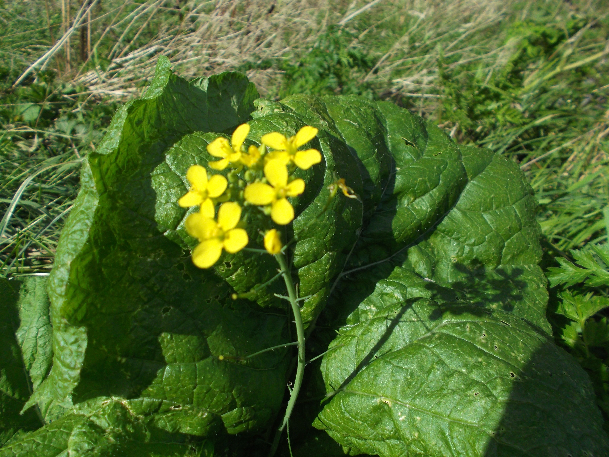
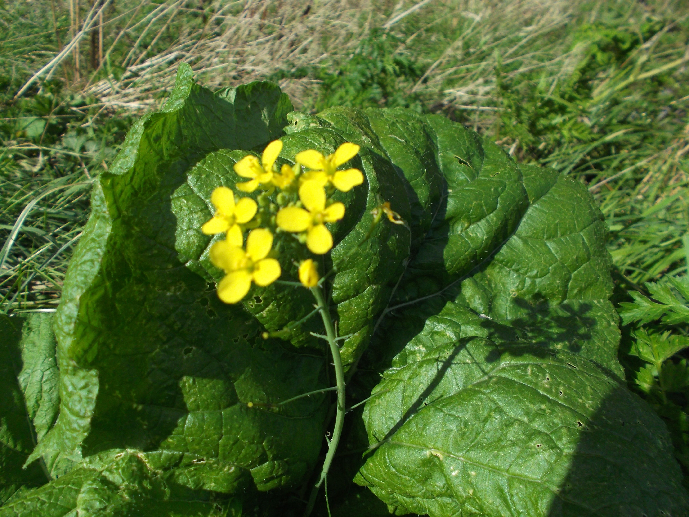
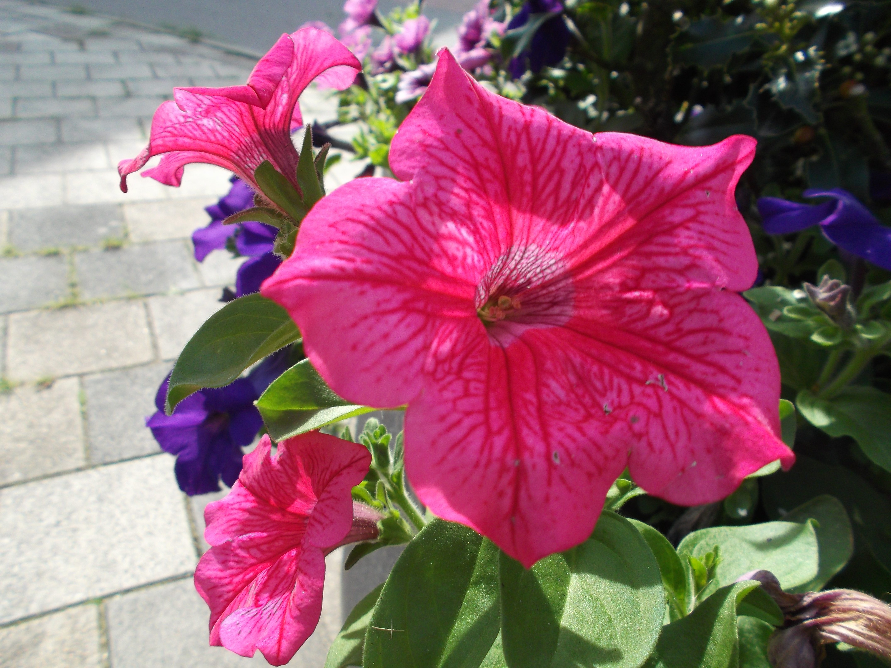
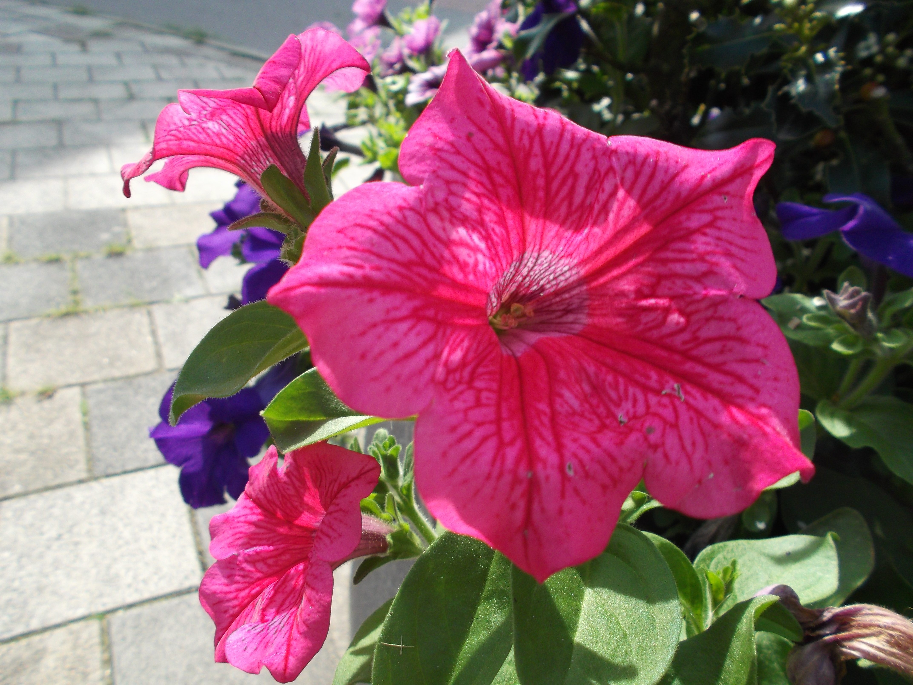
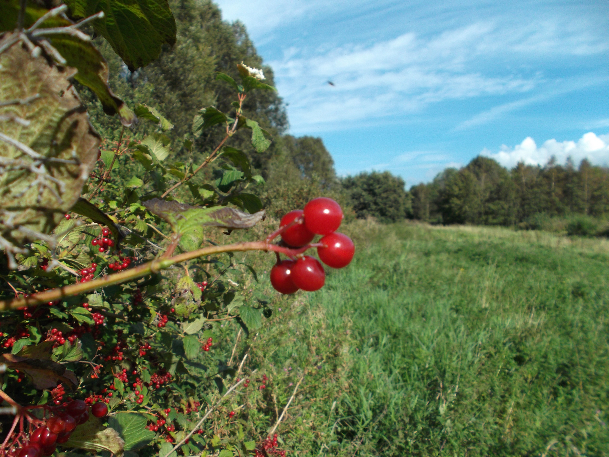
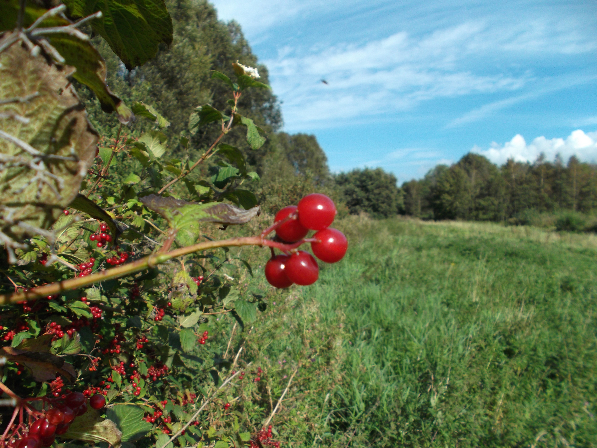

Flower photography
I like to go out and look at flowers every now and then. I find it fascinating to see how some plants sacrifice much of their strength to produce pieces of plant that are unable to convert CO2 to Oxygen and instead lure insects with pretty colors. I am kind of an insect as well, since I like these flowers! If you do too, sit back, relax and enjoy some nice colorful flowers.
 

 

 

Finally, as I was cycling through nature I saw this gracious scene with in the center the cute swan family. Man, nature sure is beautiful.